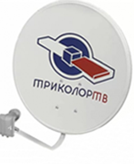
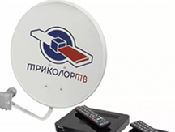

<div id="modal">
        
        <div class="slider">
            <ul class="bxslider">
              <li></li>
              <li></li>
              <li></li>
            </ul>

            <div id="bx-pager">
              <a data-slide-index="0" href=""></a>
              <a data-slide-index="1" href=""></a>
              <a data-slide-index="2" href=""></a>
            </div>
        </div>

        

        <div class="description">
            <h2>
                СПУТНИКОВЫЙ РЕСИВЕР-КЛИЕНТ ТРИКОЛОР ТВ GS-С5911
            </h2>
            <div class="price_stock">
                <div class="price">
                    3 900 <span>руб</span>
                </div>
                <div class="in_stock">
                    в наличии
                </div>
            </div>
            <a href="#" class="myButton" uk-toggle="target:#modal1" onclick="yaCounter43918984.reachGoal('buy_product'); return true;">купить</a>
            <div class="opisanie">
                <span>Функциональные возможности:</span>
                <ul>
                    <li>Автоматический поиск теле- и радиоканалов «Триколор ТВ»</li>
                    <li>Возможность создания фаворитных списков</li>
                    <li>Удобная навигация по списку телеканалов</li>
                    <li>Игры</li>
                    <li>Электронный программный гид (EPG)</li>
                    <li>Субтитры</li>
                    <li>Телетекст</li>
                    <li>Поддержка сервисов: «Кинозалы «Триколор ТВ»</li>
                    <li>Доступ к услугам возможен только при подключении к приемнику-серверу с активированной смарт-картой.</li>
                </ul>
                <!-- <p>
                    Комплект для независимого просмотра ТРИКОЛОР ТВ разных телеканалов на двух телевизорах с использованием одной смарт-карты. GS C591 («клиент») подключается к GS E501 («сервер») по сети Ethernet, для этого необходимо проложить UTP или FTP кабель от приемника-серверадо приемника-клиента.
                </p> -->
            </div>
            <div class="suite">
                <span>Интерфейсы подключения:</span>
                <ul>
                    <li>HDMI интерфейс</li>
                    <li>Разъем CVBS (выход композитного аналогового видеосигнала)</li>
                    <li>Разъем AUDIO L/R (два выхода аналогового стереозвука)</li>
                    <li>Встроенный порт USB</li>
                    <li>Разъем Ethernet</li>
                    <li>Разъем для подключения адаптера электропитания приемника (5.2V 2A)</li>
                    <li>Разъем для подключения выносного ИК-приемника</li>
                    
                </ul>
            </div>

            <div class="formats">
                <span>Доступные форматы:</span>
                <ul>
                    <li>HD - Да</li>
                    <li>MPEG 4 - Да</li>
                    <li>MPEG 2 - Да</li>
                    <li>DVB-T2 (РТРС) - Нет</li>
                    <li>Управляй Эфиром - Запись, Запись по таймеру, TimeShift – Да</li>

                    
                </ul>
            </div>


            <div class="callback-block">
                <div class="help">
                    ПОЗВОНИТЕ НАШЕМУ КОНСУЛЬТАНТУ
                    И МЫ ПОМОЖЕМ ВАМ ВЫБРАТЬ
                    ОБОРУДОВАНИЕ "ТРИКОЛОР ТВ"
                </div>
                <div class="phone">
                    8(846) 993-80-83
                </div>
                <div class="get-cllback">
                    ЗАКАЗАТЬ ЗВОНОК
                </div>
            </div>
        </div>
</div>

<script>
    // $('#modal').on('click', function(){
    //     //$(this).css({'display':'none'});
    //     $('.fancybox-container').css({"display":"none"});
    //     $('#modal1').fadeIn();
    // });

</script>